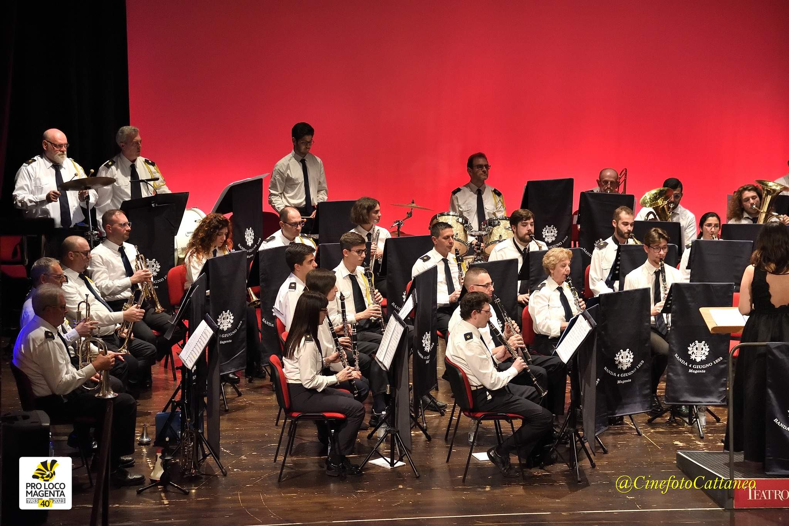

Dopo una rottura all'interno del consiglio della banda municipale, cinque musicanti si separarono e, con l'aiuto del parroco Don Tragella, fondarono una nuova banda. Fu il parroco a proporre il nome "4 Giugno 1859" in memoria della battaglia di Magenta. La prima sede fu nei locali di un'osteria in via Garibaldi 10, dove il maestro Marco Pagani iniziò le prime prove e lezioni.
Il consiglio affidò al sarto Carlo Dameno la realizzazione delle prime divise ufficiali, create in gran segreto. Il 4 giugno 1893, durante le celebrazioni della battaglia, la banda indossò per la prima volta la sua uniforme. Fu un investimento importante, che la banda si impegnò a pagare in cinque anni con rate da 50 lire.

La banda venne invitata a Torino per i festeggiamenti del cinquantenario dello Statuto Albertino. Questo evento segnò un importante riconoscimento per il gruppo musicale, che continuava a crescere sia artisticamente che numericamente.
In occasione del cinquantenario della battaglia di Magenta, la banda eseguì per la prima volta un inno composto dal maestro Pagani su parole scritte da Don Tragella. La direzione era già passata al maestro Guadagnini, che avrebbe guidato la banda per quasi settant'anni.
Con lo scoppio della Prima Guerra Mondiale, molte attività sociali e culturali si fermarono, e la banda sopravvisse in una sorta di letargo. Alla fine del conflitto, con la ripresa della vita normale, anche la banda riprese le sue attività.
Durante il regime fascista, la banda rischiò di essere assorbita dalla politica dittatoriale. Venne fondata una nuova banda, la "Cesare Battisti", con l'obiettivo di mettere in difficoltà le bande esistenti. Con un accordo e un contributo alla nuova banda, si riuscì a evitare conflitti maggiori. Nel 1924, entrambe le bande accolsero il Re a Magenta, e successivamente ricevettero anche il Duce.

Durante la Seconda Guerra Mondiale, l'attività della banda si ridusse drasticamente. A causa delle difficoltà del periodo, la banda si trasformò in un piccolo gruppo che suonava un repertorio popolare, mantenendo viva la passione per la musica nonostante le avversità.
Negli anni '50, la banda attraversò un periodo di stagnazione: l'organico era vecchio, il repertorio obsoleto e l'interesse generale ridotto. Con gli anni '60 e il benessere economico, iniziarono però a delinearsi nuove prospettive per il futuro.
Negli anni '70, la banda vide una grande trasformazione con l'ingresso delle prime donne tra i musicanti. Fino ad allora, la banda era stata composta esclusivamente da uomini. Questo cambiamento segnò una svolta significativa, che portò a un incremento degli allievi e a una maggiore partecipazione giovanile.
Negli anni '80, i giovani entrati in banda iniziarono a diventare parte attiva della gestione e dell'organizzazione delle attività. Questa nuova energia culminò nelle celebrazioni per il centenario della banda nel 1992, segnando l'inizio di una nuova fase di crescita e partecipazione.

Negli ultimi anni, la banda ha partecipato a numerosi eventi musicali di rilievo, tra cui la Festa della Musica in Francia e il concorso internazionale di Székesfehérvár. Grazie all'impegno costante e alla passione dei musicanti, la banda "4 Giugno 1859" continua a essere un punto di riferimento culturale e musicale per la comunità.
